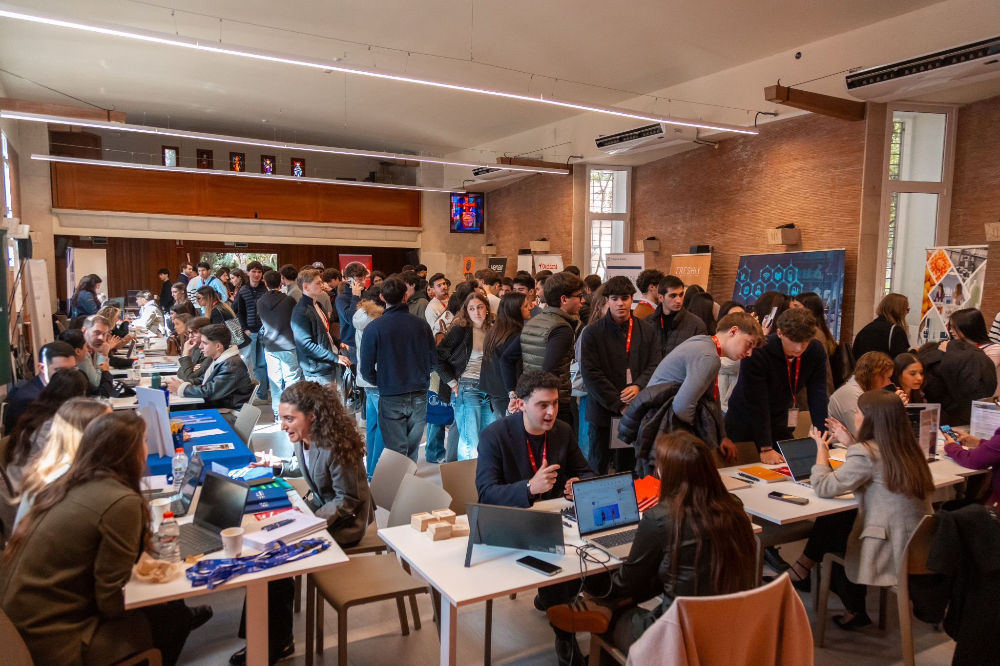
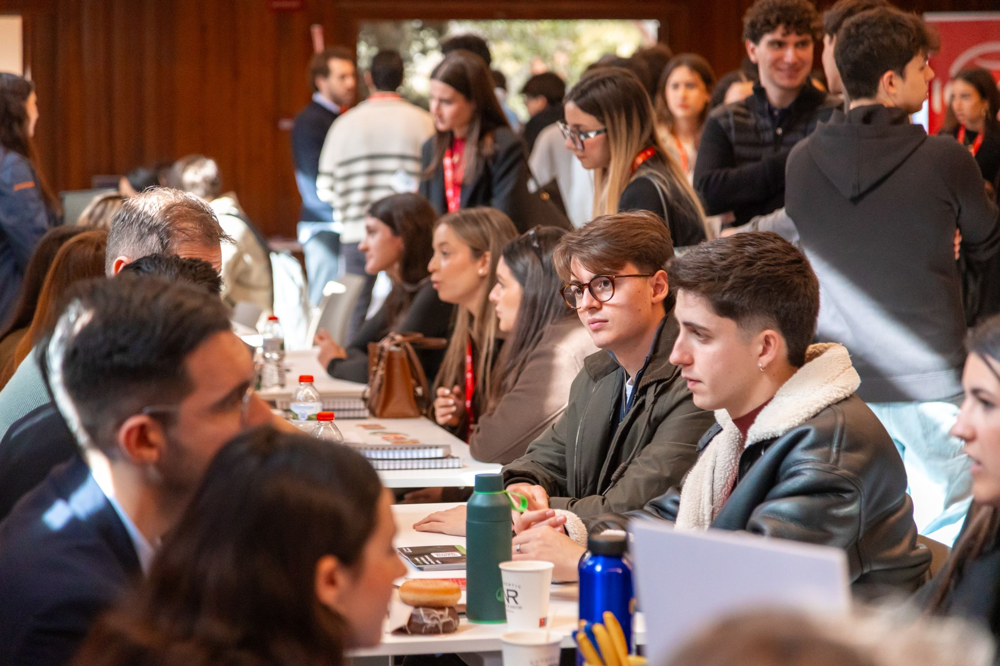

At NeumaCare, we believe that building transformative technology starts with building the right team. As we enter our next phase of growth, we are actively expanding and seeking young, motivated talent eager to make an impact in the health tech space.
Recently, we had the opportunity to take part in the Talent Day at EUNCET Business School — an experience that was both professionally meaningful and personally significant.

Returning With A New Purpose
Returning to the university where part of our journey began — this time with the purpose of identifying and attracting talent — was both inspiring and rewarding. It is a reminder of how far we have come, and of the importance of giving back to the academic communities that help shape entrepreneurs and innovators.
The event allowed us to meet students with strong potential, curiosity, and a proactive mindset. These interactions reaffirm the importance of creating bridges between academia and startups, enabling young professionals to engage early with real-world innovation environments.

What We Are Looking For
As we advance in our development roadmap, strengthening the team becomes essential to successfully navigate the challenges of scaling technology and operations. Over the coming months, we will be opening new opportunities for individuals who want to be part of a project at the intersection of healthcare, technology, and human-centred design.
We are not just looking for skills — we are looking for mindset. People who are curious, proactive, and eager to contribute to something meaningful.
An Open Invitation
If what we are building at NeumaCare resonates with you, we would be glad to connect. Whether through upcoming job openings or direct outreach, we are always open to meeting individuals who believe they can add value to the project.
"At NeumaCare, we continue growing with a clear vision: building not only technology, but also the team that will make it possible."
— NeumaCare Team
We would like to thank the team at EUNCET Business School for organising such a valuable initiative and for trusting us to be part of this event.